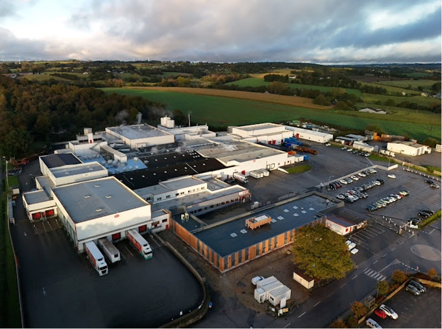

Jean Floc'h (Loudéac)
Alternance troisième année BUT Génie Industriel et Maintenance.
Mise en place d'une GMAO pour le service maintenance chez Jean Floc'h à Loudéac, Bretagne.
En parallèle de la mise en place de la GMAO, j'ai développé des compétences techniques en mécanique, électricité, automatisme et aussi en management.
Mise en place d'une GMAO pour le service maintenance chez Jean Floc'h à Loudéac, Bretagne.
En parallèle de la mise en place de la GMAO, j'ai développé des compétences techniques en mécanique, électricité, automatisme et aussi en management.

Celvia élaborés (Saint Jean Brevelay)
Alternance première année ENSIBS Génie Industriel 4.0.
Mise en place d'indicateurs afin d'identifier les sources d'erreurs de saisie dans une base de données Access. Corriger les erreurs avec les conductrices de lignes.
Mise en place d'indicateurs afin d'identifier les sources d'erreurs de saisie dans une base de données Access. Corriger les erreurs avec les conductrices de lignes.

Naval Group (Lorient)
BUT GIM (Génie Industriel et Maintenance) : En deuxième année, j'ai réalisé un stage en tant que
technicien d'étude. J'avais pour mission d'uniformiser les interfaces physiques des baies électroniques
ENSIBS : pour ma quatrième année, je vais intégrer Naval Group à Lorient pour réaliser mes deux dernières années d'alternance.
ENSIBS : pour ma quatrième année, je vais intégrer Naval Group à Lorient pour réaliser mes deux dernières années d'alternance.